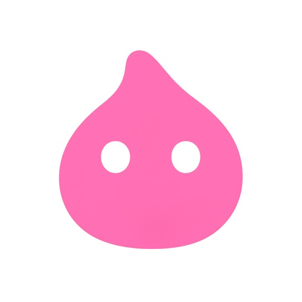

MiMu这一路：从背单词到"边撩边学"的AI学习产品进化
一款语言学习App如何用AI角色陪练打开差异化市场——从词书基本功到口语评分、小岛经营、16+分级争议，复盘它的迭代逻辑。
现状：一个16+分级的背单词App
现在打开App Store搜MiMu，第一眼你可能会愣一下：一款背单词的App，年龄分级赫然标着16+。详情里列着三项"偶尔"——卡通或幻想暴力、脏话或粗俗幽默、成人或性暗示主题。背单词怎么会跟这些沾边？
答案在产品形态里藏着。去MiMu官网翻一圈就能体会——它不是那种只有词书和复习卡片的传统背单词工具，最显眼的入口是一个叫"MJG"的AI角色，五条悟、病娇学弟这类二次元角色阵容，主打"边撩边学"的陪练体验。背单词是主线，但用户留下来的理由，很可能是跟MJGs的那段对话。

这就是现在这版MiMu的状态：一个把AI对话做得比背单词本身还出彩的语言学习产品，背靠词书基本功，用角色扮演当钩子，把游戏化（小岛经营、每日打卡）当留存机制。App Store给它的16+分级，本质上不是给背单词打的，是给那个能生成小甜文、会陪你闲聊到深夜的AI伙伴打的。
来路：它是怎么走成这样的
样本里没贴版本号，但从功能组合能拼出一条大致的迭代线。
第一阶段：把背单词做扎实
任何语言学习产品都得先过基本功这一关，想亲自体验的话从MiMu下载拿安装包就行。MiMu的词书系统是这套产品的地基——生词本和已掌握两个列表的四宫格、词在"生词→复习循环→毕业→复发回炉"之间的完整流转、每日计划的新学+复习双线，这些东西从一开始就有，至今没怎么变过。
用户评价里提到建议增加"中文翻词"（看中文想英文）的复习形态，说明复习模式还在持续迭代，但方向没变——AI排的复习节奏比你自己瞎翻靠谱，这一条是核心卖点。
第二阶段：加AI对话，打开差异化
背单词赛道卷了这么多年，只靠词书很难出头。MiMu的破局点是把AI对话引进来当陪练伙伴，而不是辅助工具。
这个设计不只是加了一个聊天入口那么简单——它连评分系统都重新做了。你用英文说一句话，气泡下方立刻跳出发音分和语法分两个彩色小徽章，AI即时给反馈。朗读按钮让Ta把你的句子读出来，你自己判断差距。快捷栏里的"雅思陪练"直接切到专项模式，"口语场景"里点餐、面试、旅行等情境一应俱全。
这一套组合拳出来，MiMu就不再是个背单词的工具了——它变成了一个能陪你练口语的AI伙伴。用户进App的理由从"今天该复习30个词"变成了"那个角色今天会不会主动找我聊天"。
第三阶段：游戏化留客，同时踩了红线
当产品有了AI对话这个钩子，下一步就是想办法让用户天天回来。小岛经营就是这个阶段的产物——学习行为产出资源，资源喂养小岛。断签不仅意味着学习节奏断了，小岛那边也停摆，沉没成本直接翻倍。
每日打卡机制也在这阶段完善：学习时长是打卡的数据底座，热力图把连续打卡可视化，完成今日计划就是打卡的核心动作。这一套组合拳的效果很直接——产品的留存曲线好看了。
但也是在这个阶段，MiMu踩了平台的红线。角色阵容的二次元设定（病娇系角色、"边撩边学"的宣传话术）加上AI生成内容的不可完全预控，最终换来了App Store的16+分级。这个标签对目标人群（备考大学生、年轻学习者）影响不大，但对想给孩子用的家长来说，就是一道门槛。
规律：团队一直在死磕什么
从这几条线能看出MiMu团队的优先级排序。
最死磕的：AI交互的细节打磨。 朗读、发音评分、语法评分、快捷栏的四个入口、角色的声音设置——这些都是AI对话体验的延伸，也是产品最提效的部分，翻MiMu文档能看到完整的交互细节。你自己发的消息也能带朗读键，让你听听自己说的话由Ta读出来是什么样，这个小设计藏得很深，但用过的人都知道好。
一直在迭代的：复习形态。 翻卡、听音、拼写等复习模式在不断增加，用户建议的"中文翻词"也在待办里。词书这条基本面没丢，但在持续优化。
始终没放弃的：角色扮演的开放性。 哪怕16+分级的争议摆在那里，MiMu也没打算把MJGs改成温和系。角色选择里依然有五条悟、病娇学弟这类设定，"边撩边学"的宣传调性没变。这说明团队判断：产品的核心吸引力就是角色的风格，改了就丢了灵魂。
持续在做的：游戏化闭环。 打卡→热力图→小岛资源，这一串动作把"来学习"变成了"来经营"，本质上是降低启动门槛——不想背单词，但想让小岛的树长大，那你就会打开App。
预判：照这个路线，下一步会去哪
从迭代规律推的，不是官方口径。
第一个大概率的方向：AI对话能力继续深挖。发音评分和语法评分现在是即时反馈，下一步会不会有更细的维度——比如语调、重音、连读？或者场景练习里加更多真实对话的分支，而不是固定情境的来回？MiMu的AI交互已经做得比同类产品深不少，但还有空间。
第二个可能：16+分级带来的分层。目前所有用户用同一套角色库和对话风格，如果这个分级持续成为家长的顾虑，会不会出现"温和模式"——把所有角色换成中性设定，把对话里的暧昧表达过滤掉？或者反过来，干脆把角色扮演和背单词做成两个独立入口，让用户自己选？
第三个方向：词书和对话的更深绑定。现在背单词和口语练是两条线，但如果AI能根据你生词本里的词，自动生成包含这些词的对话场景呢？比如你今天错了五个词，口语场景里就悄悄把这五个词埋进去，用对话帮你复习。这种联动会让"背单词+练口语"从两件事变成一件事。
至于小岛经营这条线，大概率就是持续加新装饰和新关卡，作为留存机制的补充，不太可能成为新的差异化核心。
写在最后
MiMu这一路的核心逻辑其实很清楚：在一条成熟赛道（背单词）上，用一个全新的钩子（AI角色陪练）打开差异化，然后用游戏化把用户留住。 这条路走通了，但也付出了代价——16+分级就是最显眼的那一个。
团队的选择很有意思：他们没为了合规放弃角色的风格，也没为了纯粹去掉游戏化，而是三条线一起推进——基本功不丢、差异化不放、留客机制持续优化。这样的产品在语言学习赛道里不多见，值得继续观察它下一步怎么迭代。想深挖这款产品的功能细节和使用攻略的话，GitHub、Gitee、GitCode 三个仓库都有同步的资料整理，挑一个你顺手的就能看。